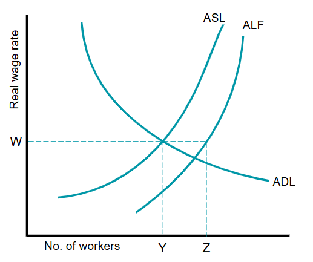
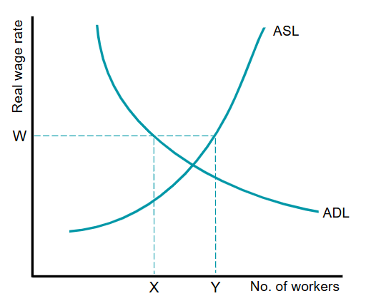
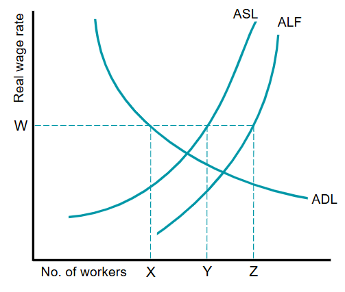

Full employment is the highest level of employment possible.
Full employment is often considered when the unemployment rate falls to 3%, although this rate may vary from country to country. This may seem surprising as you might expect the unemployment rate to be 0%. However, in practice, at any particular time some people may be experiencing a period of unemployment as they move from one job to another (full employment excludes frictional unemployment).
If an economy is operating with full employment, it will be producing on its PPC.
Factors affecting a country's labour force:
1) Frictional unemployment is temporary unemployment that arises when workers are in between jobs. This includes:
2) Structural Unemployment is unemployment that arises due to changes in the structure of the economy. Includes:
3) Cyclical Unemployment is unemployment that arises due to a lack of aggregate demand.
Equilibrium unemployment is unemployment which exists when aggregate demand for labour equals the aggregate supply of labour. At this point there will be no pressure for real wage rate to change. Those willing and able to work at the current wage rate will have a job. However, some people who are part of the labour force will not have a job. This is because they are not willing to accept jobs at the current wage rate, lack information about hob vacancies, do not the have skills or qualifications required or are not able to move where work is.

This graph shows a country's labour market in equilibrium.
The aggregate demand for labour (ADL) matches the aggregate supply for labour (ASL) at a real wage rate of W.
The aggregate labour force (AFL) includes those prepared to work at a real wage rate of W and able to find a job. But it also includes those who are not able to do the jobs on offer because they live in a different part of the country or lack the skills/qualifications required.
The ALF curve will move closer to the ASL curve as the real wage rises. This is because a higher proportion of labout will be willing to accept the wage rate.
At this wage W, a number of Y workers are employed. There is unemployment of YZ workers. These workers are experiencing voluntary unemployment, frictional and structural unemployment. In this case, unemployment arises due to problems on the supply-side.

Disequilibrium unemployment arises when the aggregate supply of labour is greater than the aggregate demand for labour at the current wage rate as shown on this graph.
The graph shows an unemployment of XY due to the excess supply of labour.
The wage rate can stay above the equilibrium level for a number of reasons:
However the problem sometimes can not be solved simply by lowering the wage rate. Because lowering the wages, decreases people's disposible income, which in turn lowers demand for goods/service. Less demand for goods in the economy may result in lower aggregate demand for labour. A downward spiral could be created.
Disequilibrium unemployment can last a long time if workers resist wage cuts or if a wage reduction leads to a fall in aggregate demand.

It is possible that, at any particular time, an economy may experience both equilibrium and disequilibrium unemployment.
This graph shows an economy experiencing XZ amount of unemployment.
XZ is disequilibrium unemployment and YZ is equilibrium unemployment.
Voluntary unemployment occurs when workers choose to not accept jobs at the current wage rate. They have the opportunity to be employed, but prefer to remain unemployed.
Involuntary unemployment arises when workers are willing to work at the current wage rate but cannot find a job.
Most structural and cyclical unemployment is involuntary unemployment. Some frictional unemployment, particularly search unemployment, may be voluntary. Workers may take longer looking for a better paid job if the wage they can currently get is close to or below any unemployment benefit they could receive.
In practice, it is difficult to determine whether unemployment is voluntary or involuntary.
The natural rate of unemployment exists when the labour market is in equilibrium where the aggregate demand for labour equals tha aggregate supply of labour.
This is different from the equilibrium unemployment because it is the rate at which economists think the economy will move back to in the long run, which is consistent with a constant inflation rate. For example, a government increases aggregate demand to reduce unemployment, demand for labour will increase. This will increase wage rate and move ASL closer to ALF. However, in the long run it may increase the price level, leading to higher costs and a fall in real wage rate. This will result in unemployment returning to the natural rate.
Supply side factors that determine the natural rate of unemployment:
To reduce the natural rate of unemployment, the government will seek to increase the willingness and ability of workers to work at the current wage rate. These policies include:
Unemployment is not usually evenly spread.
Unemployment in most countries is higher amoung young workers. Firms may be reluctant to employ young workers because of their lack of experience and the need to train. Certain groups of people may experience discrimination in the labour market and so may experience a higher than average unemployment rate.
Remember that how significant unemployment is as a problem is determined not just by its rate but also by its duration.
The patterns of employment varies between countries and it can be examined by:
Occupational mobility of labour is the ability of workers to move from one occupation to another occupation.
Georgraphical mobility of labour is the ability of workers to move to a job in a different location.
To reduce cyclical unemployment, a government will use expansionary fiscal or monetary policy tools to increase aggregate demand.
Fiscal policy tools include:
Monetary policy tools include:
However, these policies may not work due to a number of reasons:
Full Employment: the level of employment corresponding to where all who wish to work have found jobs, excluding frictional unemployment.
Equilibrium Unemployment: the unemployment which exists when the labour market is in equilibrium. It includes voluntary, frictional, and structural unemployment.
Voluntary Unemployment: unemployment that arises when workers are not willing to work at the current wage rate.
Disequilibrium Unemployment: unemployment that arises when the aggregate supply of labour is greater than the aggregate demand for labour at the current wage rate.
Natural Rate of Unemployment: the rate of unemployment that exists when the aggregate demand for labour equals the aggregate supply of labour at current wage rate and price level.
Hysteresis: unemployment causing unemployment due to workers becoming deskilled and demotivated when they're out of work for a long time.
Long-term Unemployed: those who have been unemployed for a year or longer.
Labour Mobility: ability of workers to change where they work and in which occupation.
Self-employed: those working for themselves.
Occupational Mobility of Labour: the abilty of workers to move from one occupation to another occupation.
Georgraphical Mobility of Labour: the ability of workers to move to a job in a different location.